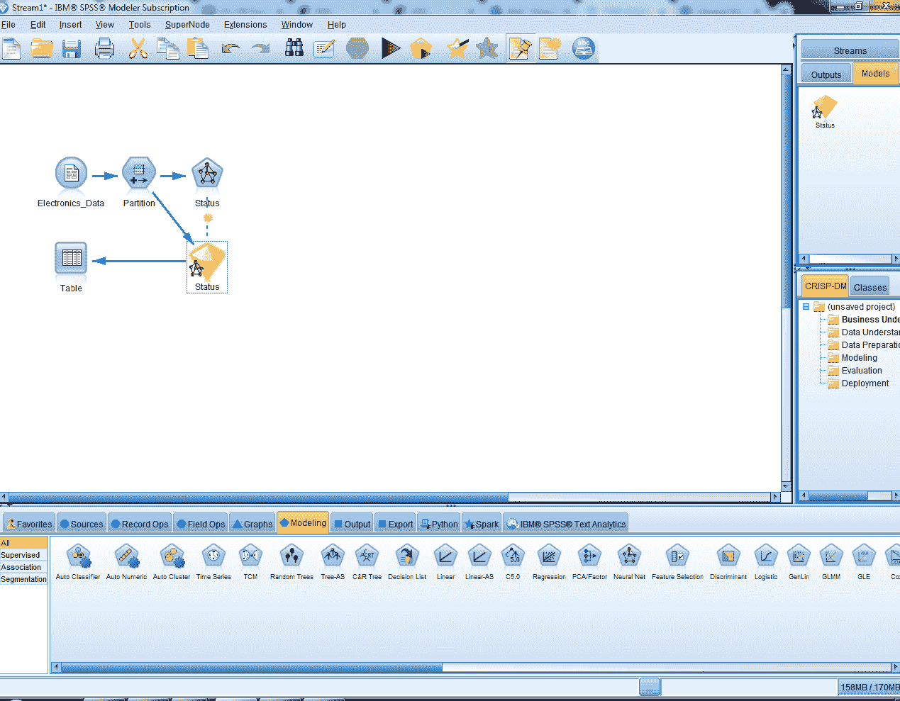

在上一章中，我们看到了什么是机器学习预测模型，并对它们如何工作形成了基本的理解。在这一章中，我们将演示神经网络模型的工作原理，然后转向另一种类型的模型，即(支持向量机 )
支持向量机模型。
以下是本章将涉及的主题:
让我们跳到一个神经网络的实际例子。我们使用的软件是IBM提供的SPSS Modeler。但是可以随意使用任何数据挖掘软件包。
为了运行我们的第一个神经网络，我们必须引入将要使用的数据，如果您使用的是IBM SPSS Modeler，您可以遵循以下步骤:
单击文件框右侧的三点框，导航至您的数据；我们在这里使用Electronics_Data:
点击打开。
点击读取数值按钮；在接下来弹出的提示上点击 OK ，你会看到:
看起来数据被正确读取了。
现在Modeler知道了状态是它将要预测的变量。它将使用其他字段来预测结果变量。
将源节点Electronics_Data连接到输出表节点:
您将看到以下数据:
因此，我们有一个包含 19个字段和5，003条记录的表，这意味着如果我们除去没有使用的目标字段和ID字段，我们在这个数据集中有17个预测值。我们将预测status字段，以根据人们购买的商品数量、总收入、他们是否使用了折扣、他们支付商品的方式、位置和其他额外的客户特征来检查我们是否已经失去或保留了客户。关闭此窗口继续。
这个分区节点将创建数据集的两个版本:
因此，数据的50将被训练，而数据集的另一个50将被测试。点击确定。
因此，你可以看到状态，神经网络预测的变量，已经被捕获，并且将为其建立一个神经网络。
你可以看到有一个目标变量，我们的17个预测器是由神经网络指定的。预测值可以是任何字段类型:连续、分类或任何其他类型。您也可以决定不包括这些预测值。
正如你所看到的，我们有两个选项，多层感知器(MLP)模型(T7)和径向基函数(RBF)模型(T10)。当您拥有诸如聚类预测器之类的东西时，RBF是首选，但是对于我们的示例，多层感知器模型是最佳选择。“隐藏层”( Hidden layers)选项允许您指定模型中所需的隐藏层数量。目前，我们将选择自动计算单元数量。因此，模型会自动为我们计算隐藏层的数量。
我们的模型将经历多次迭代，当它不再改进时就会停止；但是，它也可能因为其他原因而停止。例如，它可以在经过一定时间后停止，正如您在截图中看到的，默认设置为15分钟，但您可以对此进行更改。您也可以让模型在经过一定次数的迭代后停止，或者您可以告诉模型在达到一定的精确度后停止。因此，这些是你可以停止运行模型的其他方法。
此选项使我们能够构建一个模型的多个版本；让我们保持默认值。
我们知道，如果让神经网络运行足够长的时间，它们最终会学习数据中的模式。这可能是一个不受欢迎的功能，因为我们不想利用机会，因此我们希望保留一些数据，并且我们可以使用此选项设置每次迭代要保留的数据值-在这种情况下，训练数据集的30.0在每次迭代中从训练数据集保留。
关于随机种子，正如我们所知，我们将多次运行我们的模型(我们找到全局解，而不是陷入次优解)，我们可以生成随机种子。每次你点击生成按钮，你会得到一个不同的随机种子(或起点)。
此外，神经网络不会在缺少值的情况下运行；他们需要完整的数据，您可以使用高级选项卡预测器中的缺失值选项选择需要对缺失值做什么:
模型会自动给出或计算预测值的重要性。这将让您知道模型中哪些字段是最重要的。就模型将提供的内容而言，它将提供一个预测，并且它还将提供对该预测分数的置信度。通常，您应该看到预测值的概率；那是最有用的。
你也可以要求从下一个最有可能的结果预测的类别中获得概率的增加。如果你愿意，你也可以得到所有不同类别的分类目标的预测概率。
倾向分数最终非常有用，我们稍后会讨论它们。
让我们看看我们发现了什么。
要查看结果，单击状态生成的模型，该模型是在模型构建后自动添加的。
测试数据集需要以下观察。我们来详细了解一下:
你可以看到我们的目标是什么；我们知道，我们运行了一个多层感知器模型，然后它给出了为什么模型停止的信息，你可以看到它停止了，因为误差不能进一步减少。基本上，这意味着模型不再改进，我们有一个隐藏层，这个隐藏层有七个神经元。我们还可以看到，在训练数据集上，整体准确率约为 79% 。

这为您提供了关于预测器重要性的信息。因此，您可以观察哪些预测因子是最重要的，并且对预测有很大的贡献。这显示了最重要的预测因素。在我们的例子中，扬声器预测器名列榜首。要了解更多预测因素的重要性，您只需向左拖动标尺即可。
在这里，我们可以看到我们对训练数据集中两组中的每一组的预测有多准确；请注意正确预测的总百分比。您甚至可以从底部的样式选项卡切换到细胞计数视图。
这向我们展示了实际的神经网络模型。我们预测的是可变状态；我们有一个隐藏层，这个隐藏层有七个神经元，这就是我们在这里看到的。你可以看到每一个预测者和隐藏层神经元之间的联系。
您还可以将风格从效果切换到系数:
线越粗，预测因子在方程中就越重要，你甚至可以看到系数。
这只是给了我们关于哪个领域是我们的目标，哪个领域是我们的预测者的信息。
关闭窗口，现在我们将看到有关我们的训练数据集的信息。为此，将我们拥有的模型连接到表图标:

您可以运行表节点:
这里，您将有两个新字段， $N-Status ，预测字段，和 $NC-Status ，该预测的置信度。这里，我们有用于训练的数据以及测试数据集。
我们来分析一下模型的准确性:
符合矩阵(对于符号目标)被检查，以在模型的精确程度方面给我们提供额外的信息。
请记住，我们之前在查看模型摘要时已经看到了相同的准确性结果，大约为79%。与训练数据集相比，测试数据集的准确性略有下降，但这应该没多大关系。对于足够可靠的模型来说，两个数据集的精确度之间的差异可以在5%以内。
因此，我们的训练和测试数据非常相似，这意味着我们已经建立了一个一致和可靠的模型，我们可以信任！
如果您查看分析的$N-Status 部分的置信度矩阵，您可以看到，在训练数据集中，我们正确预测了 790 人是被搅动的人和 1，146 人是当前客户。在测试数据集中，我们正确地预测出了745名客户和1231名客户。
由于我们将多次运行神经网络模型，因此创建两个表来显示发现的内容是一个好主意:
您还可以根据您在模型中使用的种子创建前10个预测值的表:
要评估您的模型的性能，您可以像我们到目前为止所做的那样多次重新运行模型，并在每次运行时检查模型的准确性。你甚至可以用不同的种子和不同的起点来运行它。因此，得到的结果会略有不同，但相当相似。如您所知，我们多次重新运行模型，以找到可能的最佳解决方案。
要检查结果的一致性，您可以在每次重新运行模型时以这种方式继续展开模型性能表:
在这些模型中，你可以选择最有意义的模型。例如，如您所见，种子为5000的最后一个条目具有最高的整体准确性。它在预测客户流失方面的准确率也是最高的。但它在预测当前客户方面的准确率最低。因此，您可以确定哪个解决方案对您最重要，并相应地选择您的最佳模式。
每次重新运行的前10个预测值也会随着结果的细微变化而变化。您可以在每次运行模型时记录前10个预测值，并展开您之前创建的前10个预测值表:
正如您所看到的，许多预测器仍然是最重要的，例如首要预测器，而有些预测器只出现一次或两次，例如，雇员数量预测器。这些带有前10个预测值列表的表格也可以帮助您选择您需要的模型。您还可以使用此信息创建新版本的模型，其中您不想使用最初使用的预测值，而只想使用出现在前十名中最常见的预测值或出现在前十名中的任何预测值。
因为我们已经在减少预测因子的数量，这不仅会简化对模型的理解，而且最终会创建一个比某些情况下更简单的模型，这实际上可以更准确，因为你消除了其他一些预测因子可能带来的额外噪声。
支持向量机 ( 支持向量机)模型是为了预测分类和连续结果而建立的，当你有许多预测因素时，它尤其有用。它们是为难以预测的情况而开发的，在这种情况下，线性模型无法区分结果领域的类别。他们也像黑匣子一样工作，隐藏他们预测结果的复杂工作。让我们深入了解支持向量机是如何工作的。
例如，假设有一种数据不能用单线分隔，如下图所示:

将这些形状视为不同类型的数据。正如你所看到的，我们不能仅仅通过在它们之间画一条线来分离一组数据。但是，如果画一条复杂的曲线，比如一个圆，而不是一条直线，就像图中那样，同样的微分工作可以很容易地完成。
SVM的主要任务是将原始数据从这个复杂的空间转换到另一个空间，在这个空间中，分离数据点的函数要简单得多。这个任务被称为内核转换。
内核函数是一个转换数据的数学函数。之所以称之为 SVM 是因为向量形成了不同数据组之间的边界，如下图所示:
因此，我们把圆圈放在下面，正方形放在上面，边界就是矢量。这些矢量边界将两个群体分开。向量就像是群体之间的边界。
因此，在这一点上，我们可以有几种解决方案:
这表明我们不再需要圆形或复杂的曲线来分隔各组数据。
我们最终需要找到最佳解决方案。最佳解决方案将是最大化组之间的分离，同时平衡对新数据可能过度拟合函数的折衷。这一新数据包含一个权重因子或正则化因子，该因子向函数添加了一个惩罚，以最大化矢量之间的差值，同时最小化误差，如下图所示:
在 SPSS Modeler 中，有四种不同类型的内核函数:
在这一部分，我们将运行一个SVM模型，看看它是如何工作的。
首先，按照处理神经网络的方式获取数据集，将数据集划分为训练和测试数据集，并创建如下场景:
让我们看看如何运行支持向量机:
让我们详细讨论这些选项:
以下是我们为专家选项卡选择的值的汇总:

您还可以看到，我们已经获得了训练数据集和测试数据集的结果，尽管模型是基于测试数据集构建的。
该模型目前就像一个黑匣子。我们不知道我们是如何得到结果的，也不知道它是如何预测值的。让我们找出答案。
正如我们对神经网络模型所做的那样，我们将检查我们已经建立的模型的准确性。为此，选择状态并转到输出调色板并选择分析:
点击分析，如同我们之前对神经网络所做的一样，点击符合矩阵(用于符号目标)并点击运行；你会得到这个:
因此，目前我们有一个非常一致的模型！
同样，让我们将结果记录在一个表格中，如下所示:
如您所见，除了为神经网络制作的表格之外，我们还使用了一种模型，甚至还使用了正则化参数值。我们得到了一个非常一致的模型，使用核变换类型为线性，正则化参数值设置为 5 。但这也意味着我们可以尝试正则化参数的一个稍好的值，看看我们是否可以获得更好的解决方案。让我们继续寻找更好的解决方案。
回到 SVM 型号、状态，点击专家标签。您可以将正则化参数更改为更高的值，因为模型在5是一致的；把这当成一次练习。但是，取而代之的是，我们将把下一次运行的内核类型改为最复杂的 Sigmoid 类型。不建议改变偏置值。但是，您可以更改 Gamma 以获得更好的结果，并且您可以在以后对这些值进行实验。现在，我们将保持默认设置，并点击运行:

点击分析选项卡，然后点击运行。这是我们的结果:
该模型是一致的，但正如你所看到的，准确率明显低于我们在线性模型中发现的。因此，与线性模型相比，这个模型并没有做得更好。这意味着乙状结肠型不好用。
这使我们得出结论，最适合我们数据集的核变换类型是最简单的线性变换。因为数据也没有那么复杂。但是，您必须多次重新运行模型来验证您的结果。
以下是我对模型的分析:
现在，您可以看到对于每个预测器，哪种类型的核变换以何种方式起作用。您可以选择对您重要的预测值，并将其作为最佳模型。
在本章中，我们看到了如何使用神经网络模型。然后我们继续讨论SVM模型，演示SVM是如何工作的。我们已经看到了如何处理不同类型的内核转换。
在下一章，我们将更详细地研究机器学习模型。